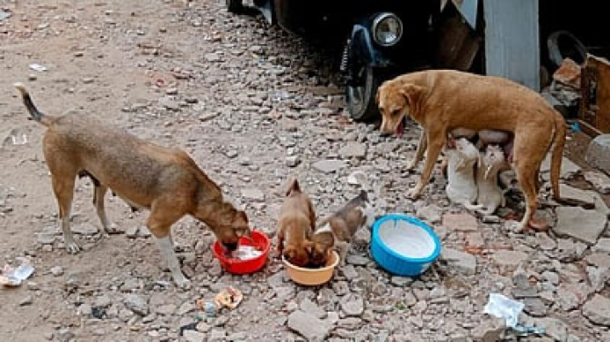
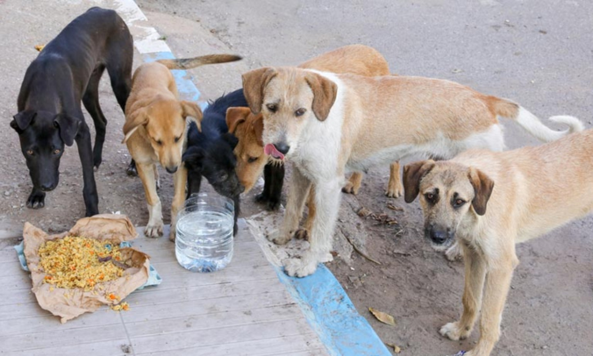
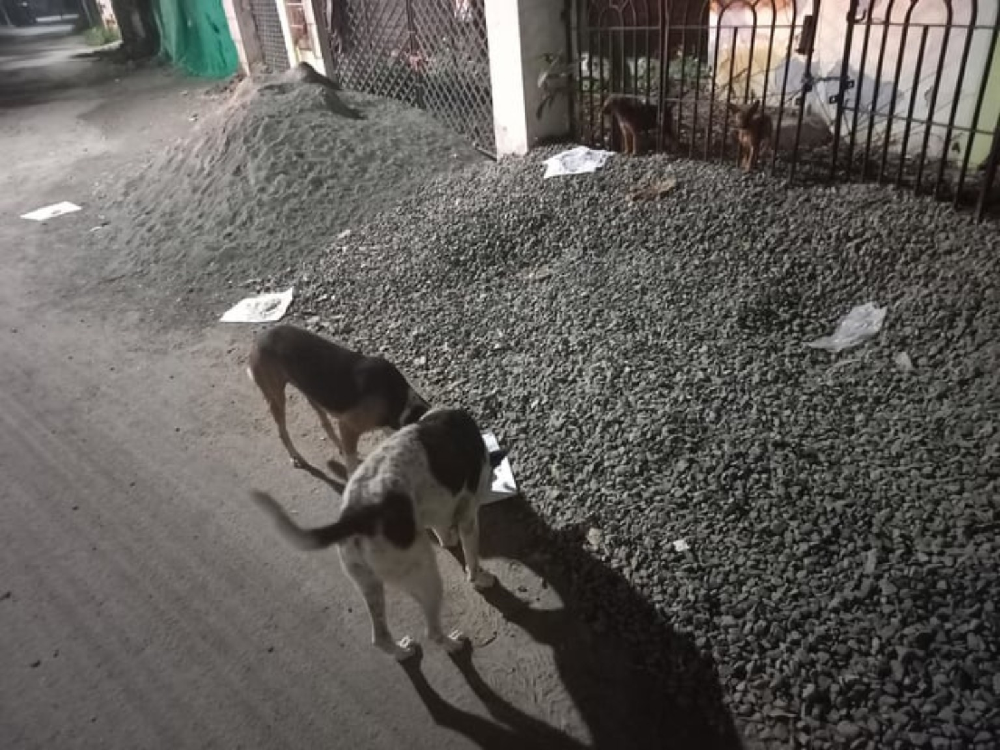
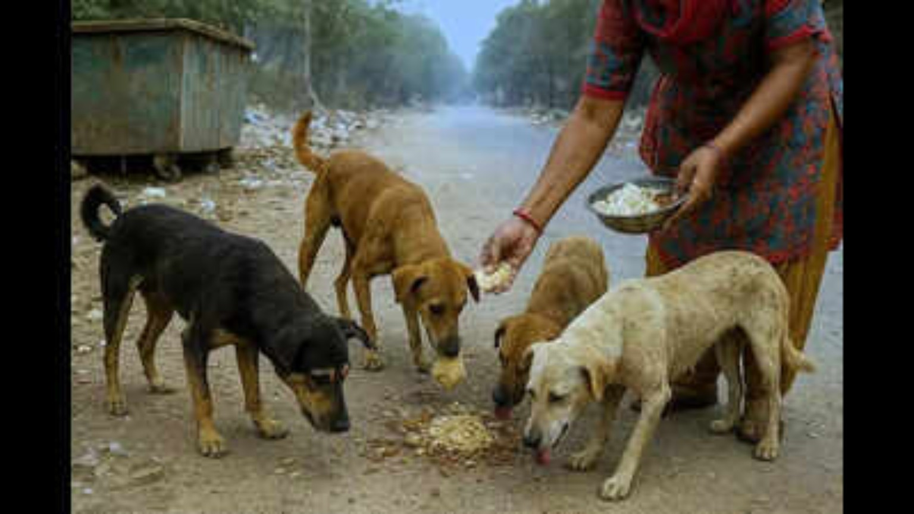
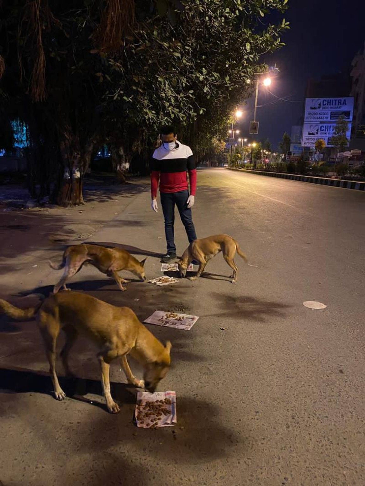
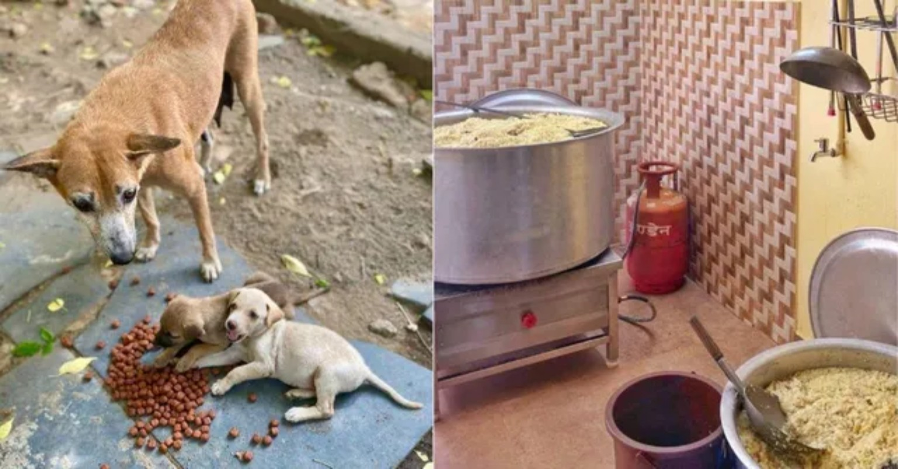
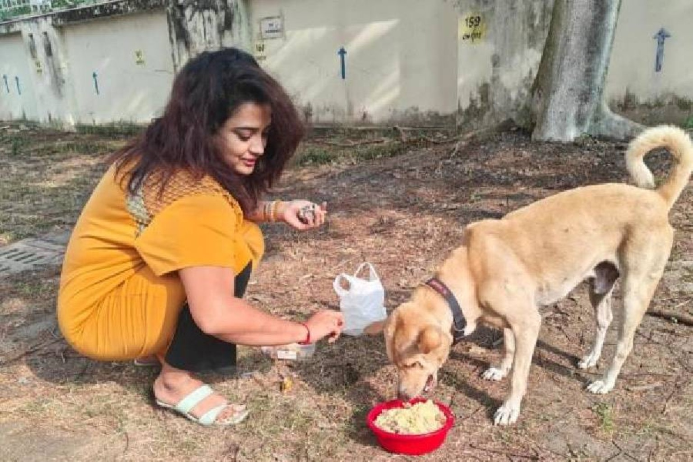

Street Dog Feeding
Support regular, responsible feeding for hungry community and stray dogs in local neighbourhoods.
PAWSEWA Foundation supports community and street dogs through feeding, clean drinking water, humane care, awareness and volunteer-led animal welfare activities in Ranchi, Jharkhand.

Our focus is practical community animal welfare: feeding street dogs, providing clean water, encouraging humane treatment and connecting people who want to help.
Support regular, responsible feeding for hungry community and stray dogs in local neighbourhoods.
Encourage access to clean drinking water, especially during hot weather in Jharkhand.
Promote humane treatment, safer coexistence and everyday care for community animals.
Connect caring people with local animal-welfare efforts, rescue support and responsible community action.
These supplied images illustrate street dog feeding, puppies, community care and the everyday challenges faced by stray and community dogs.






Photo note: These photos were supplied for this website. Captions describe what is visible and do not claim that every pictured activity was carried out by PAWSEWA Foundation.
PAWSEWA Foundation focuses on street dog feeding, stray dog welfare, community dog care, dog rescue and care support, clean water, awareness and volunteering in Ranchi and the wider Jharkhand community.
PAWSEWA FOUNDATION is registered as a Section 8 company. The incorporation details below are provided for transparency and can be independently checked through the Ministry of Corporate Affairs (MCA).
The incorporation certificate states that registration status and company details can be verified on the MCA portal. This website does not represent the MCA or the Government of India.
Verify company information on the Ministry of Corporate Affairs website →
Your support can help with community dog feeding activities. Scan the QR code or tap the button to open a compatible UPI app directly on your phone.
UPI recipient: Rakesh Kumar
UPI ID: 9709050336@superyes
The “Pay via UPI App” button uses a standard UPI payment link and may open the UPI app selected by your phone.

Scan with a supported UPI app to make a contribution
Want to feed community dogs, support dog rescue and care, help with awareness or volunteer for animal welfare in Ranchi, Jharkhand? Get in touch.